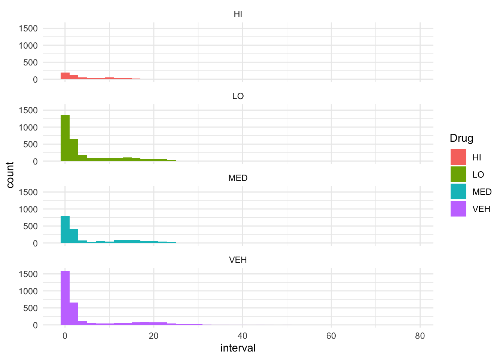
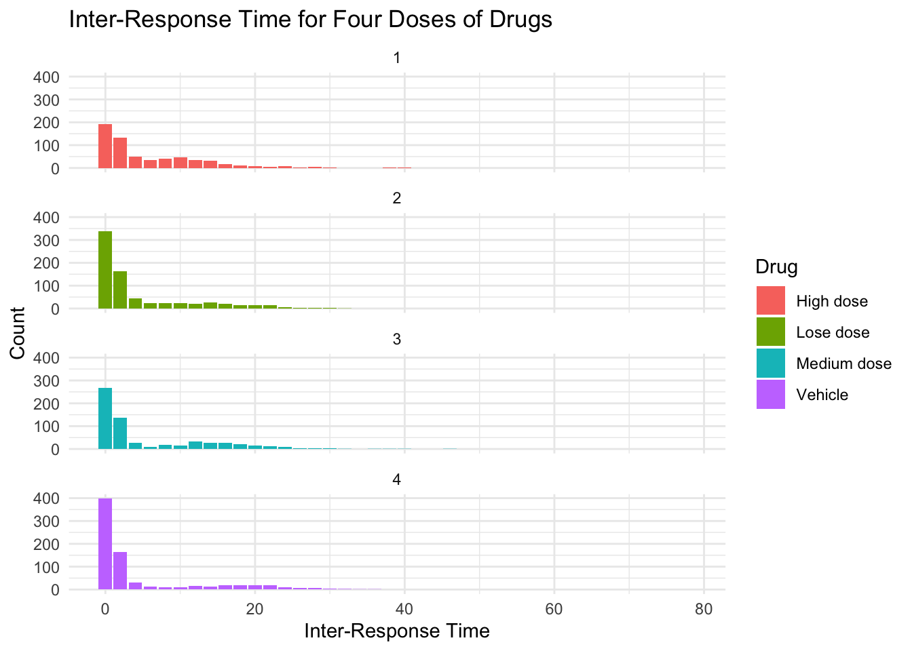
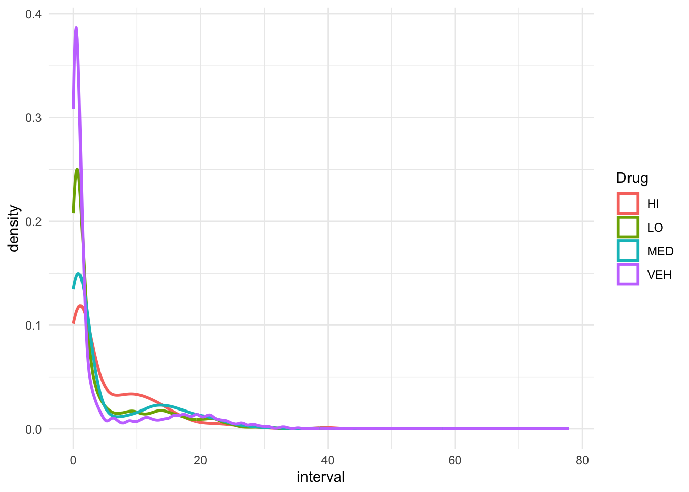
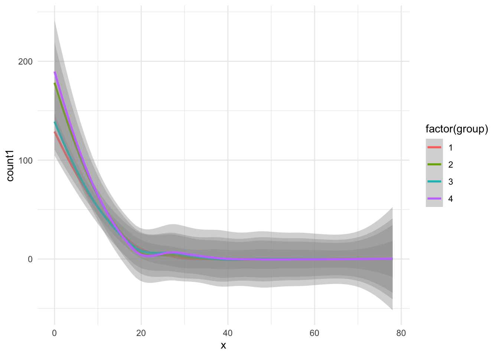
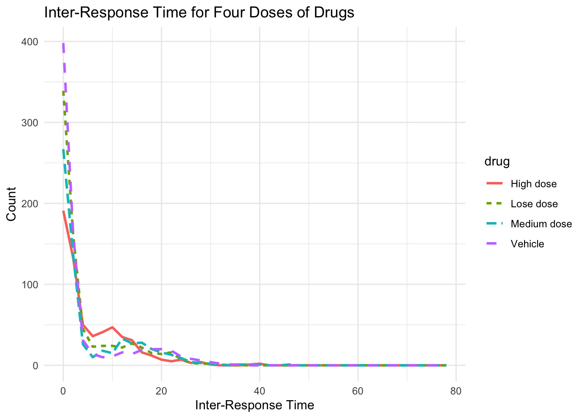

This project aims to create reusable codes that create the inter-response time plot for the DRL-20 paradigm for my first year projects. My first year project looks at the effect of acetylcholine antagonists in the nucleus accumbens on rats’ impulsive action, measured by the DRL-20 paradigm (restrain lever press for 20 seconds to get a sugar pallet). The 3 main DVs we’re looking at is reinforcerns earned, lever presses, and efficiency (reinforcers earned/total level presses), which is easy to calculate through Excel or SPSS. The inter-reponse time plot, however, require some data wrangling and is a pain in the ass to do in Excel, so that’s why I want to use R to make it easier here.
library(readxl)
library(tidyverse)## ── Attaching core tidyverse packages ──────────────────────── tidyverse 2.0.0 ──
## ✔ dplyr 1.1.4 ✔ readr 2.1.4
## ✔ forcats 1.0.0 ✔ stringr 1.5.1
## ✔ ggplot2 3.5.1 ✔ tibble 3.2.1
## ✔ lubridate 1.9.3 ✔ tidyr 1.3.0
## ✔ purrr 1.0.2
## ── Conflicts ────────────────────────────────────────── tidyverse_conflicts() ──
## ✖ dplyr::filter() masks stats::filter()
## ✖ dplyr::lag() masks stats::lag()
## ℹ Use the conflicted package (<http://conflicted.r-lib.org/>) to force all conflicts to become errorsIE_CArray_DD1 <- read_excel("data/IE_CArray_DD1.xlsx")
#clean the rows
table(IE_CArray_DD1$Subject) ##
## IE1 IE10 IE11 IE12 IE2 IE3 IE4 IE5 IE6 IE7
## 644 643 715 595 535 954 622 972 766 764
## IE8 IE9 Subject
## 539 850 11#11 rows that is the header, need to filter them out
IE_D1 <- IE_CArray_DD1 %>%
filter(!(Subject %in% "Subject"))
as_tibble(IE_D1)## # A tibble: 8,599 × 5
## Subject Experiment Drug Box Carray
## <chr> <chr> <chr> <chr> <chr>
## 1 IE1 DD1 LO 1 0
## 2 IE1 DD1 LO 1 217
## 3 IE1 DD1 LO 1 5
## 4 IE1 DD1 LO 1 0
## 5 IE1 DD1 LO 1 350
## 6 IE1 DD1 LO 1 61
## 7 IE1 DD1 LO 1 0
## 8 IE1 DD1 LO 1 0
## 9 IE1 DD1 LO 1 0
## 10 IE1 DD1 LO 1 0
## # ℹ 8,589 more rows#check the data
table(IE_D1$Subject) #looks good, now I need to convey Box and Carray to numbers##
## IE1 IE10 IE11 IE12 IE2 IE3 IE4 IE5 IE6 IE7 IE8 IE9
## 644 643 715 595 535 954 622 972 766 764 539 850IE_D1$Box <- as.numeric(IE_D1$Box)
IE_D1$Carray <- as.numeric(IE_D1$Carray)IE_D1$time <- round(IE_D1$Carray)/100
IE_D1$interval <- c(0, diff(IE_D1$time))
IE_D1$interval <- ifelse(IE_D1$interval < 0, 0, IE_D1$interval)table(IE_D1$Subject, IE_D1$Drug)##
## HI LO MED VEH
## IE1 0 644 0 0
## IE10 0 0 0 643
## IE11 0 0 0 715
## IE12 0 0 595 0
## IE2 0 0 535 0
## IE3 0 0 0 954
## IE4 622 0 0 0
## IE5 0 972 0 0
## IE6 0 0 766 0
## IE7 0 0 0 764
## IE8 0 539 0 0
## IE9 0 850 0 0#IE_D1$divisor <- ifelse(IE)From the table, we can tell that 1 rat got High dose on that day, 4 got Low dose, 3 got Medium dose, and 4 got Vehicle (saline control).
hist <- ggplot(IE_D1,
aes(x = interval, fill = Drug)) +
geom_histogram(binwidth = 2) +
facet_wrap(~ Drug, nrow = 4) +
theme_minimal()
hist
#get bin counts
bin_data <- ggplot_build(hist)$data[[1]]
head(bin_data)## fill y count x xmin xmax density ncount ndensity flipped_aes
## 1 #F8766D 191 191 0 -1 1 0.15353698 1.0000000 1.0000000 FALSE
## 2 #F8766D 133 133 2 1 3 0.10691318 0.6963351 0.6963351 FALSE
## 3 #F8766D 50 50 4 3 5 0.04019293 0.2617801 0.2617801 FALSE
## 4 #F8766D 36 36 6 5 7 0.02893891 0.1884817 0.1884817 FALSE
## 5 #F8766D 41 41 8 7 9 0.03295820 0.2146597 0.2146597 FALSE
## 6 #F8766D 47 47 10 9 11 0.03778135 0.2460733 0.2460733 FALSE
## PANEL group ymin ymax colour linewidth linetype alpha
## 1 1 1 0 191 NA 0.5 1 NA
## 2 1 1 0 133 NA 0.5 1 NA
## 3 1 1 0 50 NA 0.5 1 NA
## 4 1 1 0 36 NA 0.5 1 NA
## 5 1 1 0 41 NA 0.5 1 NA
## 6 1 1 0 47 NA 0.5 1 NA#create count1 as the average interval across rats
bin_data$count1 <- ifelse(bin_data$PANEL == 2, bin_data$count/4, bin_data$count)
bin_data$count1 <- ifelse(bin_data$PANEL == 3, bin_data$count1/3, bin_data$count1)
bin_data$count1 <- ifelse(bin_data$PANEL == 4, bin_data$count1/4, bin_data$count1)
bin_data$count1 <- round(bin_data$count1)
#create drug variable
bin_data$drug <- ifelse(bin_data$PANEL == 1, "High dose", 0)
bin_data$drug <- ifelse(bin_data$PANEL == 2, "Lose dose", bin_data$drug)
bin_data$drug <- ifelse(bin_data$PANEL == 3, "Medium dose", bin_data$drug)
bin_data$drug <- ifelse(bin_data$PANEL == 4, "Vehicle", bin_data$drug)
ggplot(bin_data, aes(x = x, y = count1, fill = drug)) +
geom_col() +
facet_wrap(~ group, nrow = 4) +
labs(title = "Inter-Response Time for Four Doses of Drugs",
x = "Inter-Response Time",
y = "Count",
fill = "Drug") +
theme_minimal()
ggplot(IE_D1,
aes(x = interval, color = Drug)) +
geom_density(linewidth = 1, alpha = .5) +
theme_minimal() 
#+ scale_color_viridis_d() #for discrete color
ggplot(bin_data,
aes(x = x, y = count1, color = factor(group))) +
geom_smooth(method = "loess") +
theme_minimal()## `geom_smooth()` using formula = 'y ~ x'
#ggplot(IE_D1,
# aes(x = interval, fill = Drug)) +
# geom_histogram(binwidth = 1, alpha = .5, position = "identity") +
# geom_line(aes(y = ..count.., linetype = Drug)) +
# theme_minimal() +
# labs(title = "Histogram with Scaled Density Line", x = "Values", y = "Count/Density")
#+ scale_color_viridis_d()
ggplot(bin_data, aes(x = x, y = count1, linetype = drug, color = drug)) +
geom_line(size = 1) +
labs(title = "Inter-Response Time for Four Doses of Drugs",
x = "Inter-Response Time",
y = "Count",
fill = "Drug") +
theme_minimal()## Warning: Using `size` aesthetic for lines was deprecated in ggplot2 3.4.0.
## ℹ Please use `linewidth` instead.
## This warning is displayed once every 8 hours.
## Call `lifecycle::last_lifecycle_warnings()` to see where this warning was
## generated.